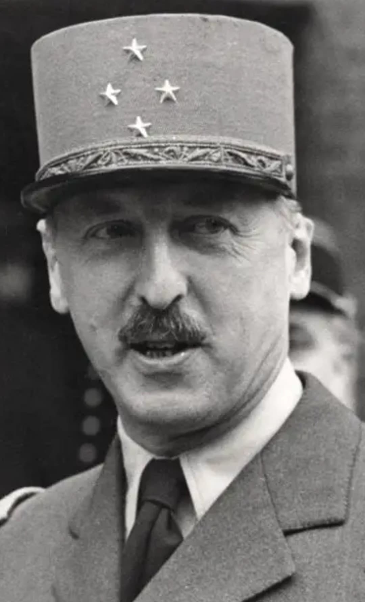

Nom : Marie-Pierre Kœnig
Naissance : 6 octobre 1898
Décès : 2 septembre 1970
Nationalité : Française
Rôle : Général de la France Libre, commandant de la 1re Brigade Française Libre
Marie-Pierre Koenig est l’un des chefs militaires les plus emblématiques de la France Libre. Son nom reste associé à la résistance héroïque de Bir Hakeim, où ses troupes tiennent face aux forces de l’Axe en 1942, permettant la réorganisation des Alliés en Afrique du Nord.
Dès 1940, Koenig rejoint la France Libre et devient l’un des principaux commandants militaires de De Gaulle. Il prend la tête de la 1re Brigade Française Libre, composée de volontaires venus de tous horizons, déterminés à poursuivre le combat.
L’épisode de Bir Hakeim est l’un des plus célèbres de la France Libre. Pendant seize jours, Koenig et ses hommes résistent aux assauts des troupes allemandes et italiennes. Leur ténacité permet aux Alliés de se réorganiser et marque un tournant moral dans la guerre.
Après Bir Hakeim, Koenig participe à la libération de la France. Il commande les Forces Françaises de l’Intérieur (FFI) en 1944 et joue un rôle majeur dans la coordination des opérations de libération.
Koenig est considéré comme l’un des grands chefs militaires de la France Libre. Son courage, son autorité et son rôle dans la Résistance extérieure en font une figure incontournable de l’histoire militaire française.